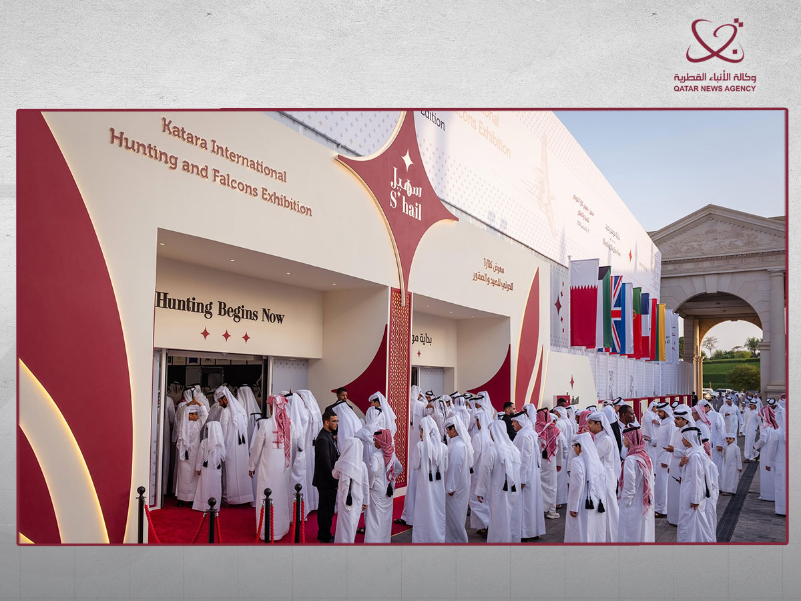

حماية طيور هجرة الخريف في لبنان: شراكة ميدانية منذ ٢٠١٧ والخطيب يؤكد دور الصياد المستدام
حملة خريفية لحماية الطيور المهاجرة في لبنان، وأدونيس الخطيب لـ«صيد»: شراكة ميدانية منذ 2017 تؤكد دور الصياد المستدام في مكافحة الصيد الجائر.
حملة خريفية لحماية الطيور المهاجرة في لبنان، وأدونيس الخطيب لـ«صيد»: شراكة ميدانية منذ 2017 تؤكد دور الصياد المستدام في مكافحة الصيد الجائر.

جولة بالصور في معرض كتارا الدولي للصيد والصقور «سهيل 2026»: الصقور والزوار وأجنحة المعرض.
أكد الأمن البيئي السعودي استمرار موسم الصيد المنظم حتى 31 كانون الثاني/يناير 2027، مع التشدد في التراخيص والمناطق المسموح بها.

اختتم معرض كتارا الدولي للصيد والصقور «سهيل 2026» بمشاركة 158 جهة وشركة من 15 دولة.
الأمن البيئي يدعو إلى الالتزام بالتراخيص والأماكن والأنواع المسموح بها خلال موسم الصيد 2026–2027.

النسخة العاشرة من معرض كتارا الدولي للصيد والصقور جمعت التراث والابتكار والتجارة والسياحة، واستقطب مزاد الصقور اهتمامًا واسعًا.

أطلقت المملكة العربية السعودية موسم الصيد البري للعام 2026–2027، في تجربة تدخل عامها السادس وتواصل تطوير نموذج يقوم على تنظيم ممارسة الصيد وربطها بحماية الحياة الفطرية واستدامة مواردها.

البجع الأبيض الكبير — Great White Pelican — بعدسة نايف كريم — أوتوستراد المتن السريع، ربيع 2026

نستعرض ضمن «صيد TV» فيلم «مقناص سعود عبد العزيز البابطين 2025–2026»، الذي يوثّق رحلته إلى أفغانستان، كما نشرته قناة البوادي على يوتيوب. الفيديو: قناة البوادي على يوتيوب .
دراسة تحذّر من تراجع الأنواع المهاجرة، ومعركة لحماية بحيرة ألبانية، وحماية البط الحديدي من كرواتيا الى مصر: مستجدات دولية تفتح أسئلة الموسم.

أدونيس الخطيب حين أسّسنا «صيد»، انطلقنا من قناعة بأن الصيد مسؤولية وثقافة ومعرفة بالطبيعة وأصول الممارسة. فالإنسان الذي يخرج إلى الطبيعة يحتاج أن يعرف طيورها وحيواناتها، وأن يفهم…
مع دخول لبنان موسم هجرة الطيور الخريفية، يكثّف مركز الشرق الأوسط للصيد المستدام ومكافحة الصيد الجائر ( (MECSHAP) )جهوده الميدانية، من خلال وحدة مكافحة الصيد الجائر ( (APU) ) وشبكة…
فرضت الظروف القاسية التي مرّ بها لبنان خلال السنوات الماضية تحدياتها على كثير من المؤسسات والقطاعات، ولم يكن موقع «صيد» بعيدًا عن تداعياتها. واليوم، ورغم استمرار بعض هذه الظروف، ي…

عصفور الشمس الفلسطيني، ويُسمى أيضًا تمير فلسطين ويُعرف بالإنكليزية (Palestine Sunbird)، هو من الطيور الصغيرة المقيمة والمشتية في لبنان. يمتاز الذكر بريش قزحي الألوان قد يظهر أخضر…
مهما ابتعد الإنسان عن تفاصيل الطبيعة، فهو يعود إليها بطرق مختلفة. لأنها الذاكرة التي لا تنطفئ في داخله والملاذ الأخير الذي يعيد له توازنه. تقدِّم مجلة "صيد فقرة الطبيعَلوجيا"، وهي…

أثبتت تجربة منع الصيد في لبنان خلال السنوات الفائتة عدم جدواها، إذ لم توقف الانتهاكات، بل حوّلتها إلى أنماط أكثر خطورة. فقد ظهرت شريحة واسعة من القوّاصين الذين يستخدمون بنادق رخيص…

العُوَيْسِق أو العوسَق الصغير، ويُعرف بالإنكليزية باسم (Lesser Kestrel)، هو أحد أنواع الصقور التي تتكاثر صيفًا بشكل عَرَضي. ويُعتبر مهاجرًا عابرًا إلى لبنان، حيث يظهر في المناطق ش…

إنها أسرار الأرض... الأعشاب البرية... الحكم المخبّأة في طيّات التربة والصخور. هناك نباتات لا تُقطف، بل تُحترم. ومن بينها، الشكران... العشبة التي حملت في صمتها حكاية السمّ والعلاج،…

طائر الوروار الأوروبي، ويُعرف بالإنكليزية باسم (European Bee-eater)، هو طائر مهاجر شائع في لبنان. وقد سُجّل حديثًا وجوده في عدّة مناطق لبنانية خلال فصل الصيف، مما يطرح احتمال أن ي…

إنها أسرار الأرض... الأعشاب والنباتات... إنها حكمة الصمت، لغة الطبيعة التي لا تُقال بل تُفهم. في كل ورقة خضراء، وفي كل جذر حكاية شفاء لا تنتهي... الاسم العربي الشائع : الزوفا – أح…

بومة المخازن أو بومة الحظائر وتعرف بالإنكليزية ( barn owl ) هي مُقيمة ومُفرخة شائعة ومنتشرة في لبنان على الساحل وفي الجبال وفي سهل البقاع يمكنها التكيف مع مجموعة واسعة من الموائل،…
في البراري الموحشة والمحيطات الهادئة، لا تحكم قوانين الغابة دائمًا بشريعة الجوع. ثمة مشاهد مدهشة في مملكة الحيوان تُسجل فيها جرائم قتل بلا هدف غذائي، بل بدوافع اجتماعية أو تناسلية…
صقر الشاهين ( Falco peregrinus ) ليس مجرد طائر جارح، بل أعجوبة طبيعية حقيقية أبهرت العلماء منذ عقود. إنه أسرع كائن حي معروف على وجه الأرض، إذ تصل سرعته أثناء انقضاضه إلى أكثر من 3…
في كل ربيع وخريف، تبدأ سماء الأرض باستقبال مشهد من أعظم عجائب الطبيعة: ملايين الطيور تنطلق في رحلاتها الشاهقة، تعبر قارات، تجتاز صحارى، تحلّق فوق البحار والجبال، دون أن تضل طريقها…